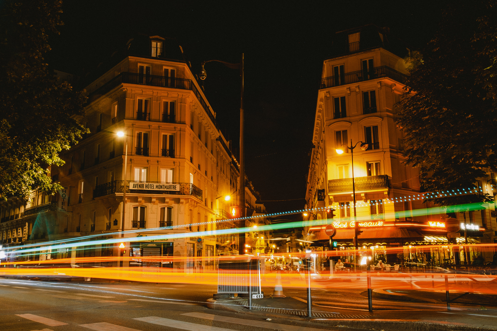
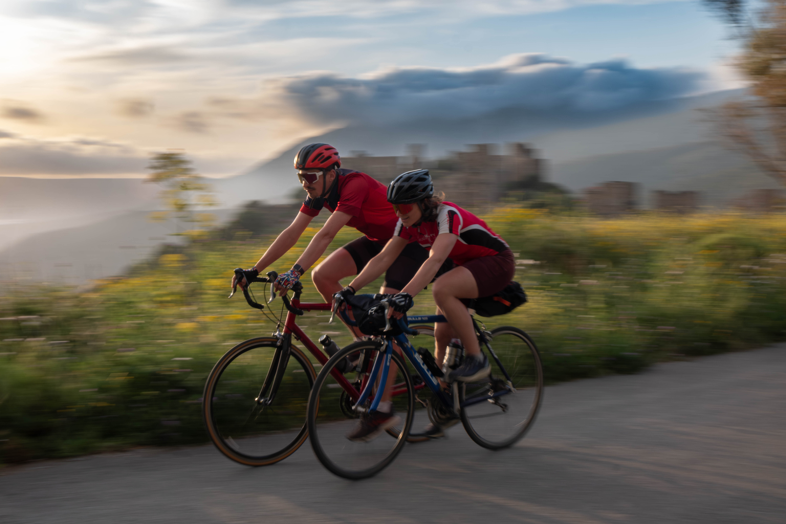
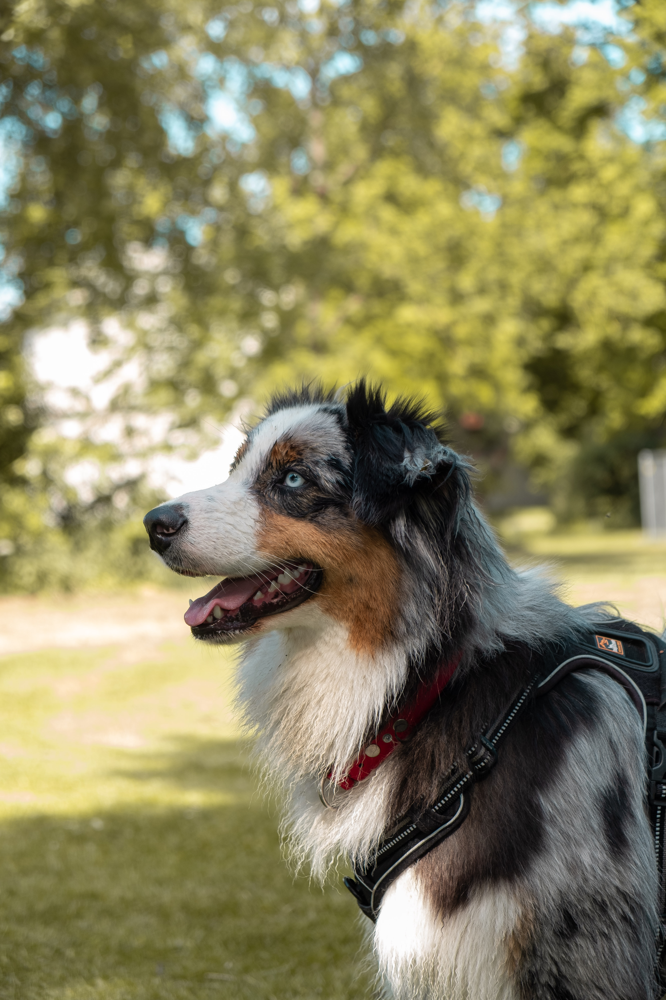

Galerie
Im Wahlfach Digitalfotografie habe ich die Grundlagen der Bildgestaltung, Kameratechnik, visuellen Erzählung und Bildbearbeitung kennengelernt. Seitdem fotografiere ich auch in meiner Freizeit gerne und nutze dafür eine Fujifilm X-T2, um Momente, Orte und Menschen festzuhalten.

Golfen in Kitzingen
5
Portraits mit einem Tuch
5

Langzeitbelichtungen in Paris
6

Rennradfahren in Griechenland
6
Ingolstadt
6

Hundefotografie
5